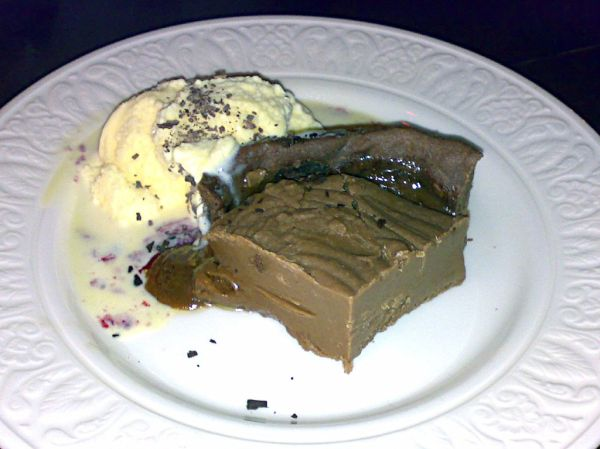

Chocolate Fudge Pie

Photo: www.theedinburghblog.co.uk (CC BY 2.0)
Directions
- Whisk together eggs and sugar in a large bowl; add butter and next 4 ingredients, stirring until blended. Stir in pecans and spoon into a lightly greased 9 inch pie plate.
- Bake a 350 degrees for 25-30 minutes. (Mixture will rise, then fall as it cools)
- Dark Chocolate Sauce to Follow?
- Whisk together eggs and sugar in a large bowl; add butter and next 4 ingredients, stirring until blended. Stir in pecans and spoon into a lightly greased 9 inch pie plate.
- Bake a 350 degrees for 25-30 minutes. (Mixture will rise, then fall as it cools)
- Dark Chocolate Sauce to Follow?
https://baron-3dl.github.io/normans-kitchen/recipe/chocolate-fudge-pie.html